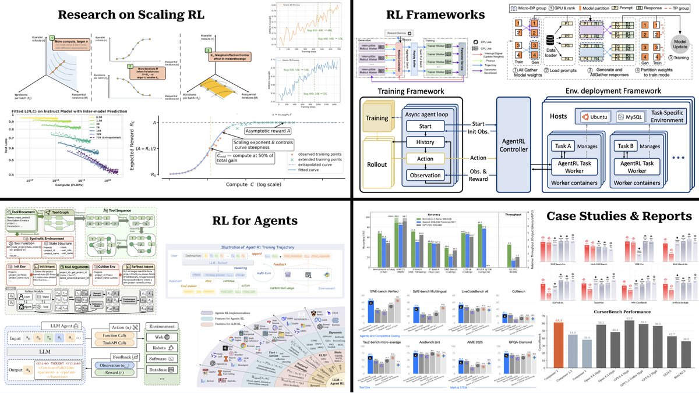

核心判断
这条帖子真正指向的是一个训练范式迁移：LLM 后训练不再只是把偏好数据喂给一个固定算法，而是在把“可验证任务上的采样计算”变成新的 scaling axis。预训练 scaling 主要问 token、参数和 FLOPs 如何换 loss；RL at scale 则问 rollout、reward、update、policy freshness 和环境并发如何换可验证能力。
这个迁移的难点在于，RL 数据不是静态 corpus。模型一更新，下一批样本的分布就变化；系统一异步，旧策略生成的轨迹就会混进当前策略的目标；任务一进入 agent 环境，奖励就从单题答案变成长轨迹中的工具调用、文件修改、测试结果和状态转移。因此，这份书单的中心问题不是“哪个 RL 算法更火”，而是“如何在规模化系统里保持训练目标仍然可信”。
原帖地图
原帖把资料分成四块：第一块是 RL scaling 的研究论文，第二块是支撑大规模训练的 RL framework，第三块是 agentic RL，第四块是团队技术报告和 case study。这个分法本身就说明作者关心的不是单点方法，而是从理论曲线到工程系统再到真实 agent 产品的完整链条。

Research on Scaling RL
回答 RL 后训练是否存在可预测的 compute-performance 曲线，以及模型规模、训练预算、采样预算和 update step 如何互相制约。
RL Frameworks
回答 rollout、training、reward、weight sync 和调度如何支撑吞吐，同时尽量不破坏 on-policy 训练语义。
RL for Agents
回答多轮工具调用、代码修改、搜索、环境状态和长程 credit assignment 如何被转成可训练轨迹。
Case Studies & Reports
回答真实团队如何把模型结构、数据、RL、环境、评测和产品约束拼成可用系统。
第一层：RL Scaling 研究
这一组资料的核心是把“RL 有用”推进到“RL 能否被规划”。如果团队准备投入几千到几万 GPU-hours 做后训练，不能只靠小样本 reward 曲线和经验参数；需要知道增加 rollout 数、增加 prompt 数、延长训练、扩大模型、改 reward 难度分别会带来什么收益和风险。
The Art of Scaling RL Compute、Scaling Behaviors of LLM RL Post-Training、Optimally Scaling Sampling Compute for LLM RL 和 Scaling up RL 都在围绕同一个问题：LLM RL 的 scaling law 不是预训练 scaling law 的简单复制。预训练数据大体固定，next-token loss 也比较平滑；RL 数据由当前 policy 生成，reward 往往稀疏且离散，策略更新还会改变未来样本分布。
| 问题 | 预训练里的直觉 | RL 后训练里的变化 | 工程含义 |
|---|---|---|---|
| 更多数据是否更好 | 更多高质量 token 通常降低 loss。 | 更多 rollout 可能带来探索，也可能带来重复低价值轨迹。 | 要区分 prompt diversity、rollout per prompt 和成功轨迹复用。 |
| 更多 update 是否更好 | 训练步数增加通常可预测地降低 loss，直到过拟合或欠优化边界。 | 过多 update 会放大 stale data、reward hacking 和 KL drift。 | 训练长度要和 reward 可靠性、policy freshness、正则强度一起看。 |
| 模型越大是否越占优 | 大模型通常在同等 token 下更强，但需要匹配 compute-optimal 数据量。 | 大模型可能更会利用 reward，也可能更会 exploit verifier 漏洞。 | 扩模型必须同时升级评测、reward 和数据治理。 |
ProRL / ProRL V2 更进一步：它们关心 prolonged RL 是否真的能让模型发现新策略，而不是只把 base model 已经会的答案重新加权。这个问题非常关键，因为如果 RL 只是重排 latent high-reward outputs，那么 scaling 上限主要由 base model 决定；如果 RL 能在长期训练中稳定探索新策略，后训练才可能成为真正独立的能力扩展路径。
第二层：RL Frameworks
如果 scaling 研究回答“值得不值得烧算力”，framework 研究回答“怎么烧才不把目标烧坏”。verl / HybridFlow、AReaL、PipelineRL、AsyncFlow 这组材料都在处理同一组系统矛盾：rollout 生成慢，训练 GPU 不能闲；训练更新快，rollout 数据又容易变旧；框架要高吞吐，同时还要尽量保持 on-policy 目标成立。
这里的机制核心是 rollout engine 与 training engine 的解耦。生成轨迹通常依赖推理服务、环境交互和 reward 计算；训练则依赖大 batch、梯度同步和参数更新。把两者解耦能显著提高资源利用率，但也会引入 policy lag：轨迹来自旧参数，梯度却更新当前参数。
表达复杂 RLHF/RL dataflow
价值在于把 actor、rollout、reference、reward、critic 等角色用更灵活的数据流组织起来，使研究 recipe 更容易落到分布式训练系统。
异步 RL 系统
关注 generation 与 training 的并发，目标是在大规模 LLM RL 中提高吞吐，同时用算法修正降低 stale rollout 带来的偏差。
把吞吐与 on-policy 拉回同一张表
这些系统的重点不是“快”本身，而是如何定义可接受的权重滞后、何时同步、何时丢弃或修正轨迹。
第三层：RL for Agents
Agentic RL 把问题从“给一个 prompt 输出答案”推进到“在环境里连续行动”。模型需要观察状态、选择动作、调用工具、读返回、修改文件、运行测试、处理失败，然后继续下一步。这样一来，reward 不再只是最终答案是否匹配，而是长轨迹中的状态变化是否推动任务完成。
DeepSWE、AutoForge、Agent-R1、AgentRL、Agentic RL survey 和 Training SWE Agents with RL 的共同主题是：要让 RL 训练 agent，首先要有足够真实、可复位、可并发、可评分的环境。代码 agent 可以用测试、编译、静态检查和 patch diff 作为反馈；research agent 可以用检索轨迹、引用质量和最终答案评分；但开放任务的 reward 很容易稀疏、延迟、被 hack，环境成本也远高于数学题 verifier。
环境是 agentic RL 的数据工厂
没有环境，就没有状态转移；没有状态转移，就没有真实多轮轨迹；没有可验证轨迹，RL 只能退化成 SFT 或偏好优化的变体。
奖励不是分数，而是训练接口
agent reward 要同时处理最终成功、中间错误、工具协议、异常终止和可能的 reward hacking。奖励设计越粗，长程 credit assignment 越难。
这也是 AutoForge 这类“自动合成 agentic RL 环境”的工作重要的原因。数学和代码任务之所以成为 RLVR 热点，不是因为它们代表所有智能，而是因为它们更容易提供可验证反馈。真正能扩展 agentic RL 的团队，最终比拼的是环境供应链：任务生成、沙箱、状态检查、reward、日志、回放、去重、防作弊和评测闭环。
第四层：Case Studies 与技术报告
最后一组资料是工业级闭环证据。Kimi、Cursor Composer、OLMo、MiniMax、Nemotron 这些报告的共同意义是：它们不再只讲一个算法点，而是把模型结构、数据、上下文长度、训练系统、agent 环境、评测和部署约束放在同一个叙事里。
Kimi k1.5 把 RL scaling 明确放进长上下文、多模态推理和测试时策略中；Kimi K2 / Kimi-Researcher 把 open agentic intelligence 和 end-to-end agentic RL 推到多步搜索、工具使用和研究任务；Cursor Composer 2/2.5 则把持续预训练和大规模 agentic RL 绑定到真实 IDE coding workflow；MiniMax M1/M2、OLMo 3、Nemotron 3 展示了 MoE、长上下文、开放数据和 agentic post-training 的不同组合。
| 报告线索 | 最该看的问题 | 不要误读成 |
|---|---|---|
| Kimi K1.5 / K2 / Researcher | RL scaling、agentic post-training、工具使用和长上下文如何组合。 | 单个 RL 算法带来全部能力跃迁。 |
| Cursor Composer 2 / 2.5 | coding agent 的 continued pretraining、环境生成、textual feedback 和产品成本如何联动。 | 只要给代码模型跑 RL 就能得到 IDE agent。 |
| OLMo / MiniMax / Nemotron | 开放模型生命周期、MoE、长上下文和 agentic deployment 如何支撑后训练。 | 技术报告指标可以直接横向比较全部模型能力。 |
推荐阅读顺序
这 26 条链接不适合按原帖从上到下硬读。更好的方式是按依赖关系分阶段读，每阶段只回答一个核心问题。
先建立 scaling 变量表
读 The Art of Scaling RL Compute、IsoCompute Playbook、Scaling Behaviors。目标是搞清楚 prompt 数、rollout 数、update step、模型规模、reward 难度和训练预算分别是什么变量。
读完应能回答：为什么 RL 的更多采样不等于预训练的更多 token？为什么同样的 compute 可以被分给更多问题、更多答案或更多更新？
再读 prolonged RL 与稳定性
读 Scaling up RL、ProRL / ProRL V2、Polaris。目标是区分“base model 已有能力的重新加权”和“长期 RL 中真实新策略发现”。
读完应能回答：长时间 RL 的收益来自探索、课程难度、reward shaping、正则化，还是只是更强的 verifier 选择效应？
把算法落到系统语义
读 verl/HybridFlow、AReaL、PipelineRL、AsyncFlow。目标不是比较框架名气，而是看 rollout/training 解耦后，policy lag、staleness 和 importance sampling 如何被处理。
读完应能回答：一次 RL 训练日志里，哪些指标能说明系统快但目标已经变脏？哪些补丁只是吞吐优化，哪些会改变优化目标？
进入 agent 环境与奖励
读 Agentic RL survey、DeepSWE、Agent-R1、AgentRL、Training SWE Agents with RL。目标是理解 agentic RL 的第一问题往往不是 KL 系数，而是环境是否可复位、可评分、可并发、可回放。
读完应能回答：为什么 coding agent RL 比数学 RLVR 更难？为什么 agent harness、tool schema 和环境终止原因会影响训练结果？
最后看工业报告
读 Kimi、Cursor、OLMo、MiniMax、Nemotron。目标是把前面三层放回真实产品管线：base model prior、数据、系统、环境、评测和部署成本共同决定能力。
读完应能回答：一个团队声称 agentic RL 有突破时，应该追问哪些训练和评测证据，而不是只看 benchmark headline？
术语解释
On-policy
这里的 on-policy 指训练用的轨迹由当前策略生成。它保证梯度估计和目标分布更一致，但在大模型 RL 中很难高吞吐，因为模型一更新，旧轨迹就可能过期。
Policy lag
Policy lag 指生成轨迹的策略版本落后于正在更新的策略版本。异步训练越激进，lag 越容易变大；lag 过大时，算法名义上是 on-policy，实际却在用旧分布优化新策略。
Importance sampling
Importance sampling 是用概率比值修正分布不一致的一类方法。在异步 RL 中，它常用于修正旧策略采样轨迹相对当前策略的偏差，但比值方差和截断方式会影响稳定性。
RLVR
RLVR 指 reinforcement learning with verifiable rewards。所谓 verifiable reward 是可以程序化检查的反馈，例如数学答案、代码测试、编译结果或环境状态，而不是纯人工偏好。
Agentic RL
Agentic RL 指把模型放进多步交互环境中训练，让它通过观察、行动、工具调用和状态反馈完成任务。它关注长轨迹决策，不只是单次回答质量。
Rollout engine
Rollout engine 是负责生成训练轨迹的部分，通常包括模型推理、环境交互、工具调用和 reward 计算。它的吞吐、并发、日志和权重同步方式会直接影响训练数据质量。
边界与风险
这份书单很强，但不能被误读成“RL scaling 已经像预训练 scaling 一样成熟”。当前公开材料仍有几个边界：第一，很多 scaling 曲线来自特定模型、特定任务和特定 verifier，跨任务外推要谨慎；第二，agentic RL 的 reward 很容易受环境、测试泄漏、工具协议和 sandbox 设计影响；第三，大厂报告常把 pretraining、mid-training、SFT、RL 和 inference-time system 组合呈现，很难把单个 RL 阶段的贡献完全剥离。
因此，这份笔记的结论不是“现在所有团队都应该立刻做大规模 RL”，而是：如果要做，必须把它当系统工程来做。RL at scale 的最小闭环不是一个 loss function，而是任务分布、rollout 系统、reward/verifier、异步训练语义、评测隔离和部署反馈。
证据边界与资料索引
本文基于 cwolferesearch 的 X 原帖与 thread 内容、原帖 26 个 t.co 短链指向的页面，以及公开 arXiv、GitHub、官方博客和技术报告页面做路线级梳理。没有逐页精读 26 篇材料全文；判断重点放在分组结构、技术主线和工程含义。